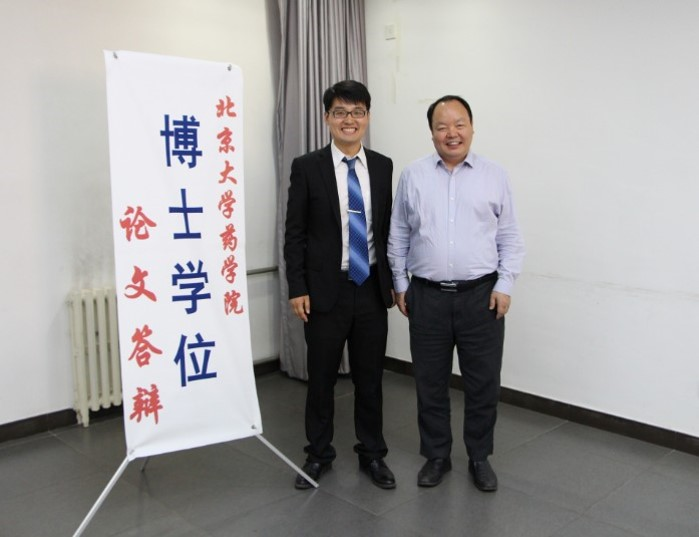
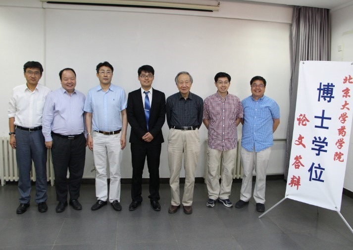
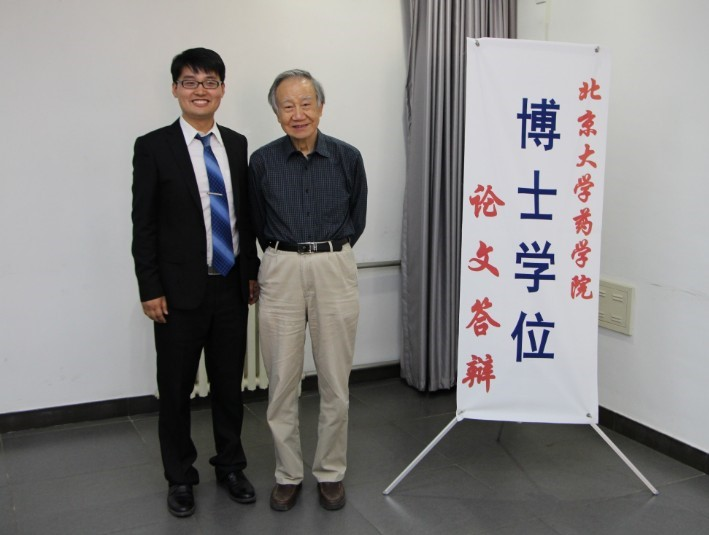
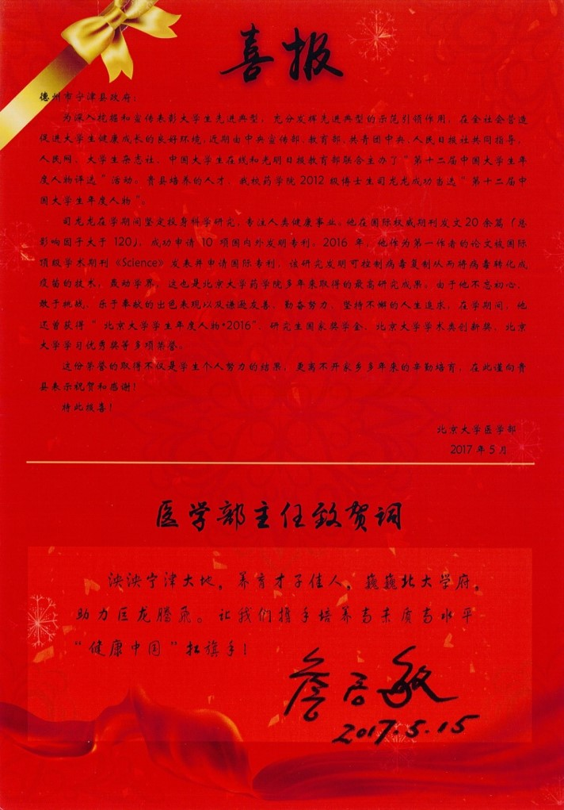
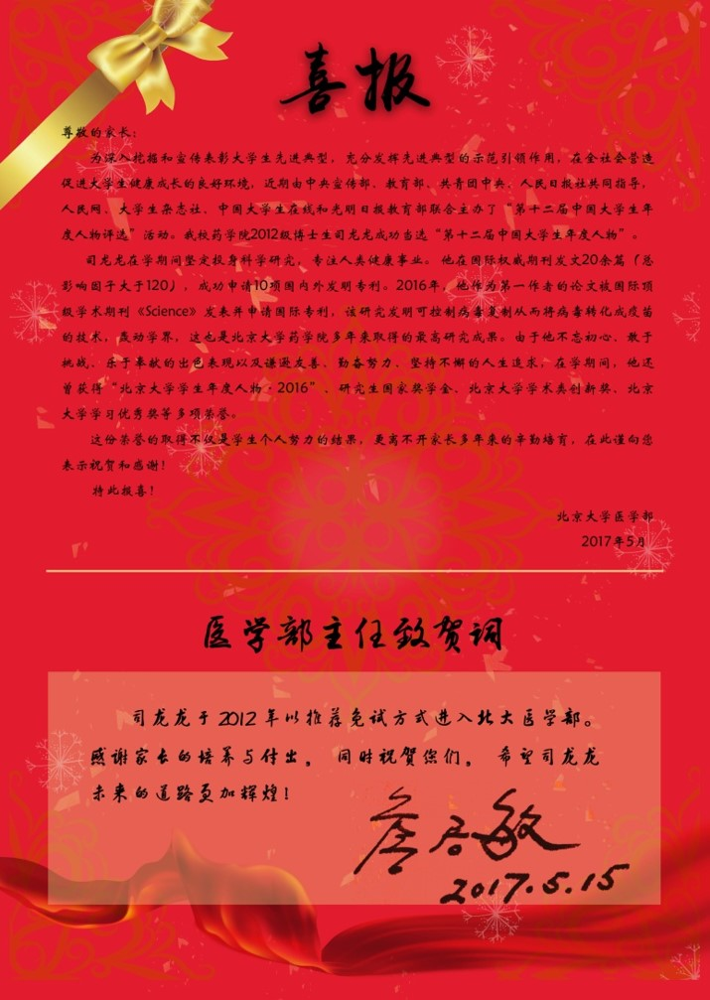
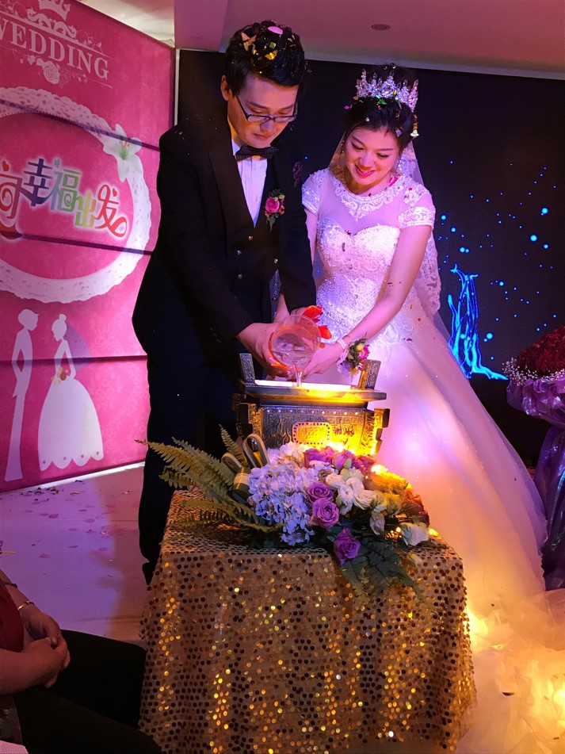
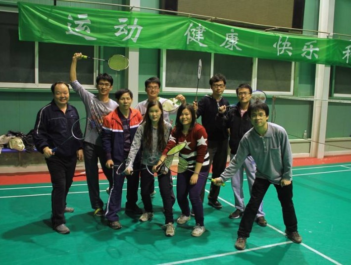
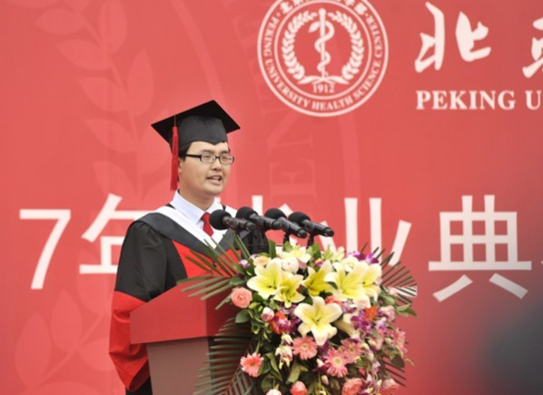

课题组成员
司龙龙 博士 (2012-2017)

Tel:+15713159748
E-mail:18810734826@163.com / Longlong.Si@wyss.harvard.edu
毕业去向：
哈佛大学Wyss Institute for Biologically Inspired Engineering， 合成生物学与生物医学工程 博士后
教育经历：
2012-2017：北京大学药学院、天然药物及仿生药物国家重点实验室， 化学生物学 博士
2008-2012：四川大学华西药学院， 药学 学士
导 师：
周德敏 教授
研究领域：
化学生物学、合成生物学、生物医学工程
荣誉奖励：
中国大学生年度人物 （2017）
北京市优秀毕业生 （2017）
北京大学优秀毕业生（2017）
北京大学“优秀博士论文”（2017）
北京大学“学术十杰”（2017）
北京大学医学部“学术之星”冠军 （2017）
北京大学学生年度人物 （2016）
国家奖学金（2016）
北京大学“创新奖（学术类）” （2016）
北京大学“学习优秀奖” （2016）
第一届国际青年生命科学家亦庄论坛——“优秀墙报奖”（2015）
北京大学“春雨”奖学金 （2015）
北京大学“优秀科研奖”（2015）
北京大学“扬子江药业”奖学金 （2014）
北京大学“卓越83”奖学金 （2013）
北京大学学业一等奖学金 （2016-2017）
北京大学学业二等奖学金 （2012-2015）
国家奖学金 （2011）
“优秀团员”（2011）
国家奖学金 （2009）
发表论文：
1. Longlong Si, Huan Xu, Xueying Zhou, Ziwei Zhang, Zhenyu Tian, Yiming Wu, Bo Zhang, Yan Wang, Zhenglan Niu, Chuanling Zhang, Ge Fu, Sulong Xiao, Qing Xia, Lihe Zhang, Demin Zhou. Generation of influenza A viruses as live but replication-incompetent virus vaccines. Science, 2016, 354, 1170-1173.
2. Longlong Si, Kun Meng, Zhenyu Tian, Jiaqi Sun, Huiqiang Li, Ziwei Zhang, Veronica Soloveva, Haiwei Li, Ge Fu, Qing Xia, Sulong Xiao, Lihe Zhang, Demin Zhou. Triterpenoids manipulate a broad range of virus-host fusion via wrapping the HR2 domain prevalent in viral envelopes. Science Advances, 2018, under revision.
3. Sulong Xiao, Longlong Si (co-first author), Zhenyu Tian, Pingxuan Jiao, Zibo Fan, Kun Meng, Xiaoshu Zhou, Han Wang, Renyang Xu, Xu Han, Ge Fu, Yongmin Zhang,Lihe Zhang, Demin Zhou. Pentacyclic triterpenes grafted on CD cores to interfere with influenza virus entry: A dramatic multivalent effect. Biomaterials 2016, 78, 74-85.
4. Maorong Yu, Longlong Si (co-first author), Yufei Wang, Yiming Wu,Fei Yu, Pingxuan Jiao, Yongying Shi, Han Wang, Sulong Xiao, Ge Fu, Ke Tian,Yitao Wang, Zhihong Guo, Xinshan Ye, Lihe Zhang, Demin Zhou. Discovery of pentacyclic triterpenoids as potential entry inhibitors of influenza viruses. J. Med. Chem. 2014, 57, 10058-10071.
5. Xueqing Chen, Longlong Si (co-first author), Dong Liu, Peter Proksch, Lihe Zhang, Demin Zhou, Wenhan Lin. Neoechinulin B and its analogues as potential entry inhibitors of influenza viruses, targeting viral hemagglutinin. Eur. J. Med. Chem. 2015, 93, 182-195.
6. Siwen Niu, Longlong Si (co-first author), Dong Liu, Andrew Zhou, Ziwei Zhang, Zongze Shao, Shaomeng Wang, Lihe Zhang, Demin Zhou, Wenhan Lin. Spiromastilactones: A new class of influenza virus inhibitors from deep-sea fungus. Eur. J. Med. Chem. 2015, 108, 229-244.
7. Zhenyu Tian, Longlong Si (co-first author), Kun Meng, Xiaoshu Zhou, Yongmin Zhang, Demin Zhou, Sulong Xiao. Inhibition of influenza virus infection by multivalent pentacyclic triterpene-functionalized per-O-methylated cyclodexrin conjugates. Eur. J. Med. Chem. 2017, DOI: 10.1016/j.ejmech.2017.03.087.
8. Yongying Shi, Longlong Si (co-first author), Xu Han, Zibo Fan, Shouxin Wang, Man Li, Jiaqi Sun, Yongmin Zhang, Demin Zhou, Sulong Xiao. Synthesis of novel pentacyclic triterpene-Neu5Ac2en derivatives and investigation of their in vitro anti-influenza entry activity. Med. Chem. Comm. 2017, DOI: 10.1039/C7MD00245A.
9. Xu Han, Longlong Si (co-first author), Yongying Shi, Zibo Fan, Shouxin Wang, Zhenyu Tian, Man Li, Jiaqi Sun, Pingxuan Jiao, Fuxiang Ran, Yongmin Zhang, Demin Zhou, Sulong Xiao. Synthesis and in vitro anti-influenza virus evaluation of novel sialic acid (C-5 and C-9)-pentacyclic triterpene derivatives. Molecules, 2017, 22,1018.
10. Wu, L.; Chen, J.; Wu, Y.; Zhang, B.; Cai, X.; Zhang, Z.; Wang, Y.; Si, L.; Xu, H.; Zheng, Y.; Zhang, C.; Liang, C.; Li, J.; Zhang, L.; Zhang, Q.; Zhou, D. Precise and combinatorial PEGylation generates a low-immunogenic and stable form of human growth hormone. J Control Release 2017, 249, 84-93.
11. Yiming Wu, Hua Zhu, Bo Zhang, Longlong Si, Huan Xu, Sulong Xiao, Lihe Zhang, Demin Zhou. Synthesis of Site-Specific Radiolabeled Antibodies for Radioimmunotherapy via Genetic Code Expansion. Bioconjugate Chem. 2016, 27, 2460-2468.
12. Wu, S.; Yang, L.; Sun, W.; Si, L.; Xiao, S.; Wang, Q.; Dechoux, L.; Thorimbert, S.; Sollogoub, M.; Zhou, D.; Zhang, Y. Design, synthesis and biological evaluation of gentiopicroside derivatives as potential antiviral inhibitors. Eur J Med Chem. 2017, 130, 308-319.
13. Wei Song, Longlong Si, Shuai Ji, Han Wang, Xiaomei Fang, Li-yan Yu, Renyong Li, Li-na Liang, Demin Zhou, Min Ye. Uralsaponins M-Y, antiviral triterpenoid saponins from the roots of Glycyrrhiza uralensis. J. Nat. Prod. 2014, 77, 1632-1643.
14. Aigang Yang, Longlong Si, Zhenping Shi, Li Tian, Dong Liu, Demin Zhou, Peter Proksch, Wenhan Lin. Nitrosporeusines A and B, Unprecedented Thioester-Bearing Alkaloids from the Arctic Streptomyces nitrosporeus. Organic Letters, 2013, 15, 5366-5369.
15. Yang Zhao, Longlong Si, Dong Liu, Peter Proksch, Demin Zhou, Wenhan Lin. Truncateols AeN, new isoprenylated cyclohexanols from the sponge-associated fungus Truncatella angustata with anti-H1N1 virus activities. Tetrahedron 2015, 71, 2708-2718.
16. Sulong Xiao, Qi Wang, Longlong Si, Yongying Shi, Han Wang, Fei Yu, Yongmin Zhang, Yingbo Li, Yongxiang Zheng, Chuanling Zhang, Chunguang Wang, Lihe Zhang, Demin Zhou. Synthesis and anti-HCV entry activity studies of beta-cyclodextrin-pentacyclic triterpene conjugates. ChemMedChem 2014, 9, 1060-1070.
17. Sulong Xiao, Qi Wang, Longlong Si, Xiaoshu Zhou, Yongmin Zhang, Lihe Zhang, Demin Zhou. Synthesis and biological evaluation of novel pentacyclic triterpene a-cyclodextrin conjugates as HCV entry inhibitors. Eur J Med Chem, 2016, 124, 1-9.
18. Xu Han, Yongying Shi, Longlong Si, Zibo Fan, Han Wang, Renyang Xu, Pingxuan Jiao, Kun Meng, Zhenyu Tian, Xiaoshu Zhou, Hongwei Jin, Yongmin Zhang, Lihe Zhang, Sulong Xiao, Demin Zhou. Design, synthesis and biological activity evaluation of novel conjugated sialic acid and pentacyclic triterpene derivatives as anti-influenza entry inhibitors. MedChemComm, 2016, DOI: 10.1039/C6MD00292G.
19. Yongxiang Zheng, Fei Yu, Yiming Wu, Longlong Si, Huan Xu, Chuanling Zhang, Qing Xia, Sulong Xiao, Qi Wang, Qiuchen He, Peng Chen, Jiangyun Wang, Kazunari Taira, Lihe Zhang, Demin Zhou. Broadening the versatility of lentiviral vectors as a tool in nucleic acid research via genetic code expansion. Nucleic Acids Res 2015, 43, e73.
20. Han Wang, Renyang Xu, Yongying Shi, Longlong Si, Pingxuan Jiao, Zibo Fan, Xu Han, Xingyu Wu, Xiaoshu Zhou, Fei Yu, Yongmin Zhang, Liangren Zhang, Lihe Zhang, Demin Zhou, Sulong Xiao. Design, synthesis and biological evaluation of novel l-ascorbic acid-conjugated pentacyclic triterpene derivatives as potential influenza virus entry inhibitors. Eur J Med Chem 2016, 110, 376-388.
21. Fei Yu, Yiyun Peng, Qi Wang, Yongying Shi, Longlong Si, Han Wang, Yongxiang Zheng, Emily Lee, Sulong Xiao, Yingbo Li, Hengli Tang, Chunguang Wang, Lihe Zhang, Demin Zhou. Development of bivalent oleanane-type triterpenes as potent HCV entry inhibitors. Eur J Med Chem 2014, 77, 258-268.
22. Shuai Ji, Ru Li, Qi Wang, Wenjuan Miao, Ziwei Li, Longlong Si, Xue Qiao, Siwang Yu, Demin Zhou, Min Ye. Anti-H1N1 virus, cytotoxic and Nrf2 activation activities of chemical constituents from Scutellaria baicalensis. J Ethnopharmacol 2015, 176, 475-484.
23. Fei Yu, Qi Wang, Han Wang, LongLong Si, JiaXin Liu, Xu Han, Su-Long Xiao, Li-He Zhang, Demin Zhou. Synthesis and biological evaluation of echinocystic acid derivatives as HCV entry inhibitors. Chinese Chemical Letters 2016, 27, 711–713.
24. Bo Zhang, Huan Xu, Jingxian Chen, Yongxiang Zheng, Yiming Wu, Longlong Si, Ling Wu, Chuanling Zhang, Gang Xia, Lihe Zhang, Demin Zhou. Development of next generation of therapeutic IFN-a2b via genetic code Expansion. Acta Biomaterialia 2015, 19, 100–111.
25. Huan Xu, Yan Wang, Jiaqi Lu, Bo Zhang, Ziwei Zhang, Longlong Si, Ling Wu, Tianzhuo Yao, Chuanling Zhang, Sulong Xiao, Lihe Zhang, Qing Xia, Demin Zhou. Re-exploration of the Codon Context Effect on Amber Codon-Guided Incorporation of Noncanonical Amino Acids in Escherichia coli by the Blue-White Screening Assay. Chembiochem 2016, 17, 1250-1256.
26. Zhang Z, Xu H, Si L, Chen Y, Zhang B, Wang Y, Wu Y, Zhou X, Zhang L, Zhou D. Construction of an inducible stable cell line for efficient incorporation of unnatural amino acids in mammalian cells. Biochem Biophys Res Commun. 2017, 5, 489(4):490-496.
27. Xiao S, Tian Z, Wang Y, Si L, Zhang L, Zhou D. Recent progress in the antiviral activity and mechanism study of pentacyclic triterpenoids and their derivatives. Med Res Rev. 2018, 38(3):951-976.
申请专利：
1. PCT/CN2016/092778 突变的病毒、其制备方法和应用。
2. 201511029463.1 定点突变的流感病毒、其活疫苗及其制备方法和应用。
3. 201610248269.0 三萜衍生物及其抗埃博拉病毒的用途。
4. 201410541586.2 一类新聚酮化合物的制备方法及其抗流感用途。
5. 201410289156.6 Neoechinulin B的抗流感用途。
6. 201310684679.6 一种新的三萜-环糊精共价化合物及其制备方法和用途。
7. 201610055542.8 携带正交tRNA/氨酰tRNA合成酶的稳定细胞系的构建。







